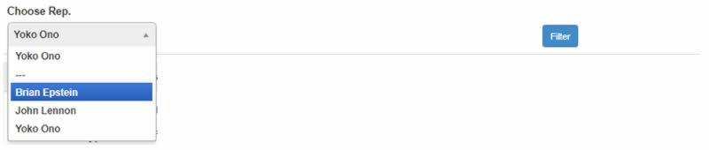
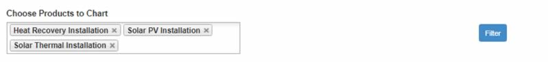
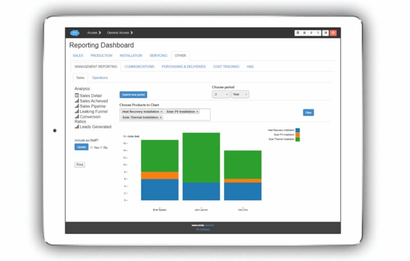
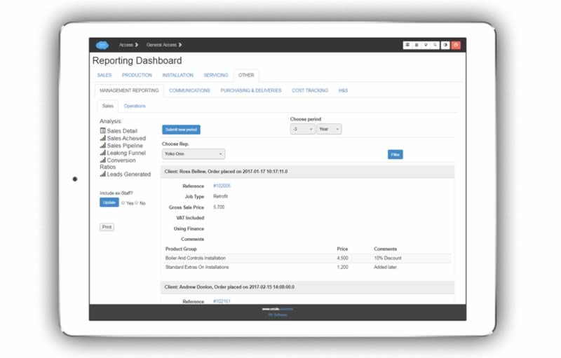
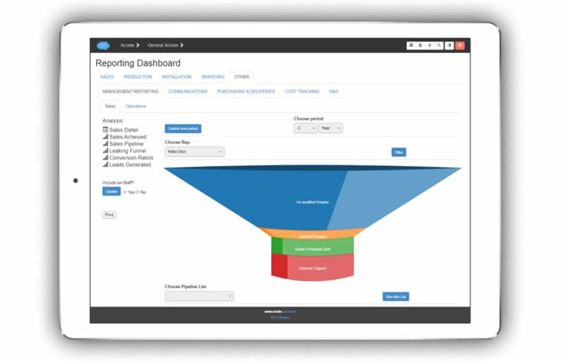
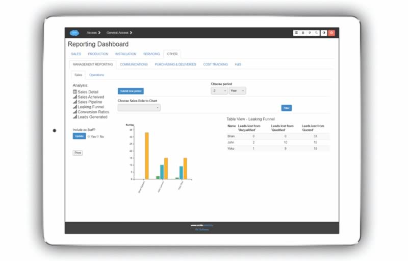
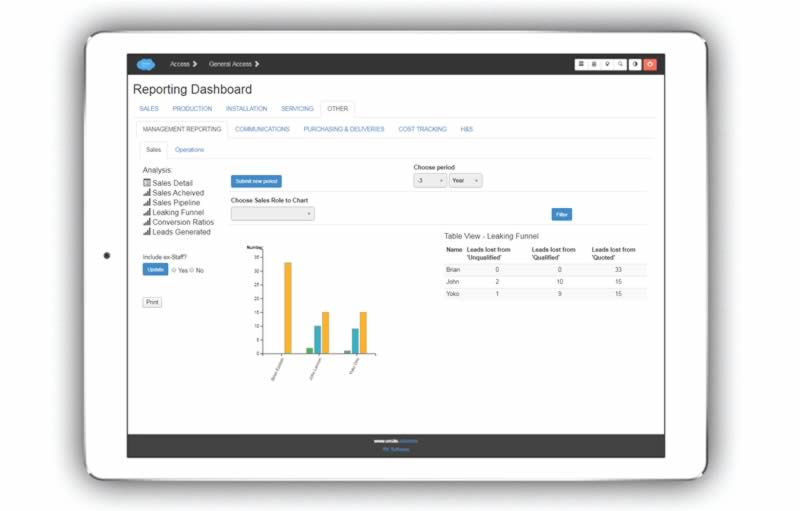
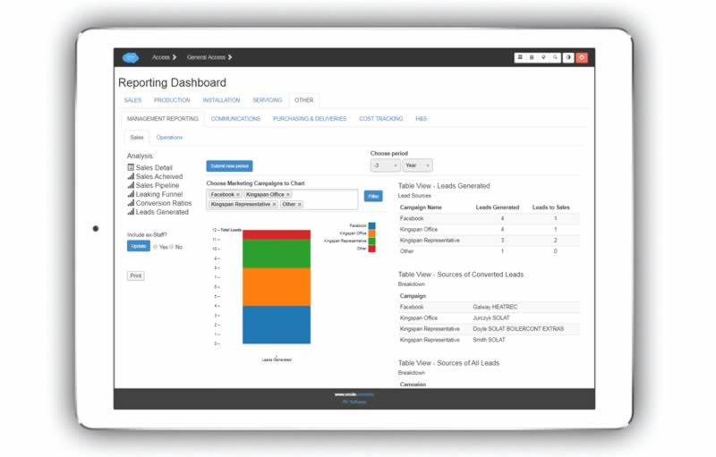

Flexible and powerful report templates and queries give management the insight they need.
Illustrative query controls.
Choose the parameters for the period of time you want to look at (days, weeks, months).
Choose a sales representative or other staff member.
Choose multiple fields to display on the chart. Just click into the box to bring up the drop-down.
Note
The dialogue for the Leads Generated report is similar.
All saves achieved, broken down by sales rep, and product category.
Note
There is a switch on the left to choose whether to include ex-sales staff in the query or not.
Detailed information for each sale broken down by each sales rep, including price achieved etc.
Overview the sales pipeline for each rep.
Note
You can drill down into details of the opportunities by choosing a sales stage from the ‘Choose Pipeline List’ drop-down.
Understand where leads are being lost. You can separate internal sales and field sales if required.
Key sales ratios. Leads to prospects, prospects quoted, closing ratio, prospects to sales.
See how many leads each marketing campaign generated for the period queried. There are also detail lists accompanying this graphic which provide additional information.
